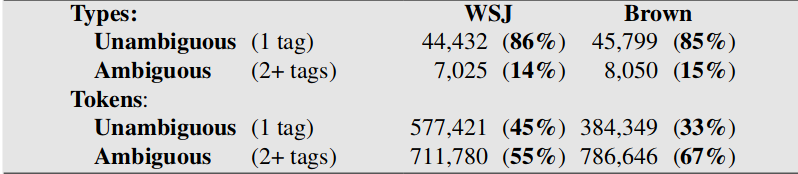

Corpus — 6
clement.plancq@ens.fr
L’étiquetage morpho-syntaxique (POS tagging) consiste à assigner des informations grammaticales à chaque mot d’un texte.
Je suis allée dans la chambre. Elle me cherche alors je la chambre.
Je/PRO suis/V allée/V dans/PP la/DET chambre/N. Elle/PRO me/PRO cherche/V alors/ADV je/PRO la/PRO chambre/V.
Les étiqueteurs sont souvent couplés à un outil de segmentation en phrases et en mots et/ou à un lemmatiseur.
Eugene Charniak. Statistical techniques for natural language parsing. 1997
90% de précision globale (accuracy) avec un algo simpliste sur de l’anglais
Aujourd’hui les meilleurs étiqueteurs sur le Penn Treebank frôlent les 98% (sota)
Mais les résultats descendent à 90% sur des données issues de Twitter (voir http://nlpprogress.com/english/part-of-speech_tagging.html)
la/PRO/DET/N chambre/N/V est/V/N bien/A/ADV/N exposée/A/V
Noms propres, mots étrangers, sigles. Quelle étiquette associer ?
Peu de corpus annotés de référence (gold standard) en français
L’étiquetage est surtout une tâche de disambiguïsation
Pourtant la plupart des types formant le vocabulaire sont non ambigus : ils ne peuvent porter qu’une catégorie morpho-syntaxique
Mais les mots ambigus sont les plus fréquents dans les textes
 extrait de Speech and Language Processing (3rd ed. draft). Dan Jurafsky and James H. Martin
La plupart des modèles utilisés par ces étiqueteurs ont été entraînés sur le French Treebank
On trouve peu de modèles librement distribués pour l’oral ou d’autres variétés du français. Il existe un modèle au format TreeTagger pour le français médiéval : voir BFM
Il existe un modèle Talismane pour les textes littéraires en français moderne
Utilisation d’un lexique (forme fléchie, POS, morpho, lemme) et de grammaires locales (ex: Unitex)
Plus très utilisés aujourd’hui
Eric Brill. 1992. A simple rule-based part of speech tagger. In Proceedings of the third conference on Applied natural language processing (ANLC ’92). Association for Computational Linguistics, Stroudsburg, PA, USA, 152-155. DOI=http://dx.doi.org/10.3115/974499.974526
Apprentissage fondé sur des transformations (Transformation-based error-driven learning), guidé par les erreurs
Se veut être une alternative aux étiqueteurs stochastiques
Tag de chaque mot avec tag le plus probable d’après le modèle, sans prise en compte du contexte
Les mots inconnus du corpus d’entraînement avec capitale sont taggés noms propres
Les autres mots inconnus du training reçoivent le tag le plus fréquent des mots finissants avec les mêmes trois lettres (ex: blahblahous est taggué adjectif)
Beaucoup d’erreurs à l’issue de cette phase
Les erreurs de tagging à l’issue de la phase 1 sont conservées
Exemple de règle apprise à l’aide d’un patron de correction
changer l'étiquette de Déterminant en Pronom
si le mot suivant est un Verbe conjuguéCalcul du nombre d’erreurs corrigées avec la règle et le nombre d’erreurs générées : si la règle est rentable elle est conservée dans une base de règles et appliquée sur l’ensemble du corpus
Performance améliorée lorsque le modèle probabiliste est couplée à un lexique
Les erreurs sont difficilement analysables
Un des plus utilisés pour le français
On ne sait presque rien des données utilisées pour apprendre le modèle du français
Helmut Schmid (1994): Probabilistic Part-of-Speech Tagging Using Decision Trees. Proceedings of International Conference on New Methods in Language Processing, Manchester, UK.
La plupart des étiqueteurs probabilistes reposent sur des ngram utilisés pour modéliser la probabilité d’une séquence de mots taggués.
TreeTagger repose également sur des ngram mais il utilise des arbres de décision binaires pour estimer les probas de transition entre les mots de la séquence.
Pour les mots inconnus TreeTagger s’appuie sur des probas de suffixes
istes NOM 0.7 ADJ 0.2 VERB:pres 0.1
Les tests de l’arbre de décision sont choisis pour avoir le partitionnement le plus efficace possible
Vous trouverez une bonne illustration dans le support de Franck Sajous ici
Selon les algorithmes on va utiliser des méthodes différentes pour évaluer l’efficacité du partionnement. TreeTagger utilise la méthode du gain d’information basée l’entropie.
Voir le cours de Loïc Grobol pour plus de détails.
Les étiqueteurs à l’état de l’art obtiennent des scores de précision globale (accuracy) > 95%
Pour être évalué, le résultat d’un taggeur automatique est comparé à un corpus annoté de référence (gold standard)
Pour un taggeur on met en avant la précision : \[ \frac{nombre\ d'unités\ correctement\ annotées}{nombre\ d'unités\ annotées} \]
\[ \frac{tp}{tp+fn}\]
\[ \frac{tp}{tp + fp} \]
macro-average \[ \frac{Pr_N + Pr_V + Pr_A}{3} \]
micro-average \[ \frac{tp}{tp + fp} \]